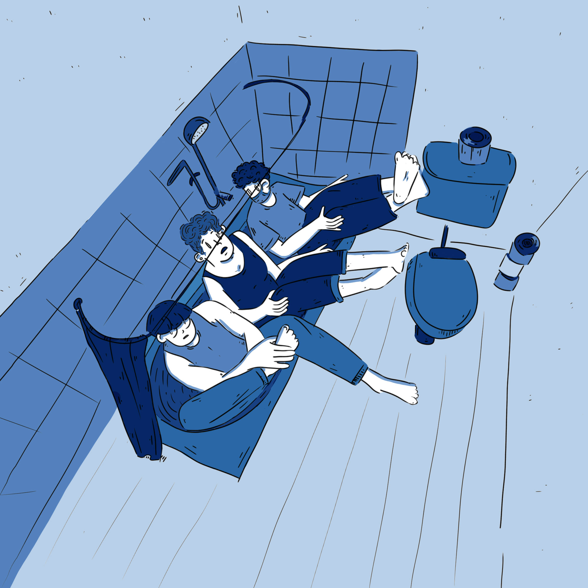

Ambre Daibissaram

line
STAGE
night
paris
Réalisation d’une bande dessinée en tant que graphiste à Nightline Paris.
2020
Ambre Daibissaram
NIGHTLINE EST UN SERVICE D’ÉCOUTE, DE SOUTIEN ET D’INFORMATION GÉRÉ PAR DES ÉTUDIANTS BÉNÉVOLES
Suite aux mesures sanitaires mises en place pour éviter la propagation du covid-19 (et tout particulièrement le confinement), un projet mis en place par Nightline Paris fût la création d’une bande dessinée multicanale (instagram, facebook) s’adressant en particulier aux étudiants.
L'objectif ?: Communiquer sur la santé mentale et le ressenti des étudiants durant le confinement.